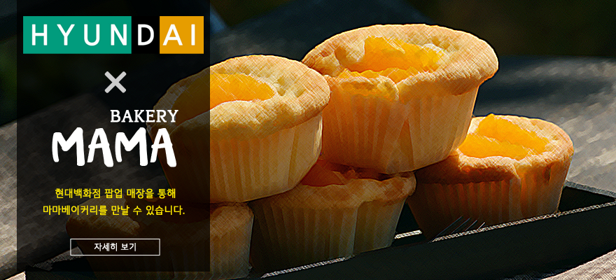
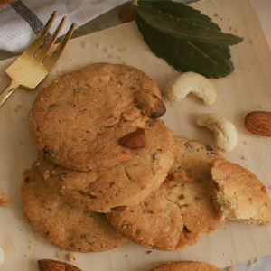

BRAND
마마 베이커리
글루텐프리, 무설탕
MENU
새로운 메뉴
인기 메뉴
건강한 빵
건강한 과자
STORE
매장 정보
콜라보레이션
COMMUNITY
공지사항
자주 묻는 질문
Login
Join
메인 슬라이드
글루텐프리, 무설탕
밀가루와 설탕 없이 건강한 베이커리를 만듭니다
공지사항, 신메뉴

NEW ARRIVAL
1
2
3
4
5
마마 베이커리의 새로운 메뉴
자세히 보기 >>
BEST MENU
마마베이커리의 인기 메뉴
마마 우리쌀 앙버터 스콘
마마 단호박 파운드케이크
마마 오트밀 건포도 쿠키
마마 우리콩 초코 머핀
마마 아몬드 브라우니
마마 우리쌀 무화과 깜빠뉴
새벽 3시부터 시작되는
마마 베이커리의 남다른 고집
자세히 보기
All MENUS
마마베이커리의 모든 메뉴
새로운 메뉴
마마 우리쌀 녹차 머핀
- 녹차 특유의 쌉싸름한 맛을 좋아하는 녹차 매니아에게 딱!
- 쌀가루로 만들어 포슬포슬하고 부드러운 식감을 살렸으며 대체감미료인 말티톨을 넣어 건강한 달달함을 즐길 수 있습니다.
마마 현미 치즈 샤브레
- 현미의 고소함과 진한 체다치즈 풍미의 완벽 조화
- 식이섬유가 풍부한 현미를 주원료로 하여 든든한 포만감을 느낄 수 있으며 설탕 대신 스테비아, 에리스리톨, 말티톨을 넣어 건강한 달콤함을 즐길 수 있습니다.
마마 우리콩 무설탕 브라우니
- 달달하고 진한 초코와 고소함 터지는 호두의 환상적인 콜라보
- 초콜릿 대신 카카오분말을 넣어 쫀쫀하고 꾸덕한 식감과 초코 본연의 깊은 풍미를 느낄 수 있습니다.
마마 아몬드 브라우니 샌드
- 아몬드 브라우니와 특제 크림의 환상적인 궁합
- 밀가루 대신 아몬드가루로 만든 브라우니에 부드럽고 고급스러운 마마 베이커리만의 특제크림을 넣어 극강의 조화를 즐길 수 있습니다.
마마 우리쌀 무화과 깜빠뉴
- 무화과가 있어 씹히는 맛과 달달한 맛을 동시에 즐길 수 있는 깜빠뉴
- 인위적인 달달함이 아닌 재료 본연의 달달함을 즐길 수 있으며 밀가루가 없는 빵을 찾지만 시중의 빵맛을 원하시는 분들게 만족감을 안겨드릴 수 있는 빵입니다.
인기 메뉴
마마 우리쌀 앙버터 스콘
- 누구나 즐길 수 있는 마마 베이커리의 대표 메뉴
- 취향에 따라 호불호가 크게 갈리지 않으며 우리쌀로 만들어 더욱 건강하게 즐길 수 있습니다.
마마 단호박 파운드케이크
- 진한 단호박 맛과 향을 느낄 수 있는 영양만점 파운드케이크
- 설탕 대신 말티톨을 넣어 건강한 단맛을 내고 밀가루 대신 콩과 단호박을 넣어 소화에도 부담 없습니다.
마마 오트밀 건포도 쿠키
- 오트밀, 아몬드, 건포도로 만들어 식감이 예술인 쿠키
- 건포도의 달달함과 오트밀, 아몬드의 고소함을 느낄 수 있어 인위적이지 않은 달콤함을 즐길 수 있습니다.
마마 우리콩 초코 머핀
- 병아리콩과 대추야자가 만들어내는 독특한 식감이 매력적인 머핀
- 일반 머핀보다는 꾸덕하고 브라우니보다는 촉촉하며, 유기농 엑스트라버진 코코넛오일을 넣어 촉촉하고 부드럽게 베어 물립니다.
마마 아몬드 브라우니
- 설탕 대신 대체감미료, 밀가루 대신 아몬드가루를 넣어 만든 브라우니
- 아몬드의 고소함과 코코아파우더의 깊은 풍미로 재료 본연의 깊은 맛을 살린 건강한 브라우니를 즐길 수 있습니다.
마마 무설탕 초코칩 쿠키
- 무설탕 초콜릿을 사용하여 당뇨인도 즐길 수 있는 쿠키
- 130년 이상의 전통을 지닌 스페인 초콜릿 제조사 발로르의 ‘슈가프리 다크 초콜릿 52%’와 천연감미료인 말티톨을 사용하여 건강한 달콤함을 즐길 수 있습니다.
건강한 빵
마마 우리쌀 앙버터 스콘
- 누구나 즐길 수 있는 마마 베이커리의 대표 메뉴
- 취향에 따라 호불호가 크게 갈리지 않으며 우리쌀로 만들어 더욱 건강하게 즐길 수 있습니다.
마마 단호박 파운드케이크
- 진한 단호박 맛과 향을 느낄 수 있는 영양만점 파운드케이크
- 설탕 대신 말티톨을 넣어 건강한 단맛을 내고 밀가루 대신 콩과 단호박을 넣어 소화에도 부담 없습니다.
마마 우리콩 초코 머핀
- 병아리콩과 대추야자가 만들어내는 독특한 식감이 매력적인 머핀
- 일반 머핀보다는 꾸덕하고 브라우니보다는 촉촉하며, 유기농 엑스트라버진 코코넛오일을 넣어 촉촉하고 부드럽게 베어 물립니다.
마마 아몬드 브라우니
- 설탕 대신 대체감미료, 밀가루 대신 아몬드가루를 넣어 만든 브라우니
- 아몬드의 고소함과 코코아파우더의 깊은 풍미로 재료 본연의 깊은 맛을 살린 건강한 브라우니를 즐길 수 있습니다.
마마 우리쌀 녹차 머핀
- 녹차 특유의 쌉싸름한 맛을 좋아하는 녹차 매니아에게 딱!
- 쌀가루로 만들어 포슬포슬하고 부드러운 식감을 살렸으며 대체감미료인 말티톨을 넣어 건강한 달달함을 즐길 수 있습니다.
마마 우리콩 무설탕 브라우니
- 달달하고 진한 초코와 고소함 터지는 호두의 환상적인 콜라보
- 초콜릿 대신 카카오분말을 넣어 쫀쫀하고 꾸덕한 식감과 초코 본연의 깊은 풍미를 느낄 수 있습니다.
마마 아몬드 브라우니 샌드
- 아몬드 브라우니와 특제 크림의 환상적인 궁합
- 밀가루 대신 아몬드가루로 만든 브라우니에 부드럽고 고급스러운 마마 베이커리만의 특제크림을 넣어 극강의 조화를 즐길 수 있습니다.
마마 우리쌀 무화과 깜빠뉴
- 무화과가 있어 씹히는 맛과 달달한 맛을 동시에 즐길 수 있는 깜빠뉴
- 인위적인 달달함이 아닌 재료 본연의 달달함을 즐길 수 있으며 밀가루가 없는 빵을 찾지만 시중의 빵맛을 원하시는 분들게 만족감을 안겨드릴 수 있는 빵입니다.
건강한 과자
마마 무설탕 초코칩 쿠키
- 무설탕 초콜릿을 사용하여 당뇨인도 즐길 수 있는 쿠키
- 130년 이상의 전통을 지닌 스페인 초콜릿 제조사 발로르의 ‘슈가프리 다크 초콜릿 52%’와 대체감미료인 말티톨을 사용하여 건강한 달콤함을 즐길 수 있습니다.
마마 아몬드 쿠키
- 아몬드가 듬뿍 들어가 바삭하고 고소한 쿠키
- 바삭한 쿠키 속에 아몬드 조각이 박혀 있어 씹는 맛을 느낄 수 있으며 설탕 대신 말티톨을 사용하여 건강한 달콤함을 즐길 수 있습니다.
마마 오트밀 건포도 쿠키
- 오트밀, 아몬드, 건포도로 만들어 식감이 예술인 쿠키
- 건포도의 달달함과 오트밀, 아몬드의 고소함을 느낄 수 있어 인위적이지 않은 달콤함을 즐길 수 있습니다.
마마 코코넛 쿠키
- 코코넛 특유의 달콤한 향과 독특한 식감이 일품인 쿠키
- 식이섬유가 풍부한 코코넛을 주원료로 하여 든든한 포만감을 느낄 수 있으며 대체감미료인 말티톨을 넣어 건강한 달콤함을 즐길 수 있습니다.
마마 현미 얼그레이 샤브레
- 현미 베이스에 볶은 아몬드의 고소함, 고급스러운 홍차 맛을 더한 샤브레
- 식이섬유가 풍부한 현미를 주원료로 하여 든든한 포만감을 느낄 수 있으며 설탕 대신 스테비아, 에리스리톨, 말티톨을 넣어 건강한 달콤함을 즐길 수 있습니다.
마마 현미 치즈 샤브레
- 현미의 고소함과 진한 체다치즈 풍미의 완벽 조화
- 식이섬유가 풍부한 현미를 주원료로 하여 든든한 포만감을 느낄 수 있으며 설탕 대신 스테비아, 에리스리톨, 말티톨을 넣어 건강한 달콤함을 즐길 수 있습니다.